Proyecto de investigación
Concurso de acceso a Catedrático de Universidad. Acceso reservado a la comisión.
Clave de acceso
Entrar
Buscar
Ctrl K
Editor
Tribunal
Ajustes
✎ Editar contenido
Editando esta página
N
C
Los cambios se guardan solos
Volver al texto del Word
Terminar